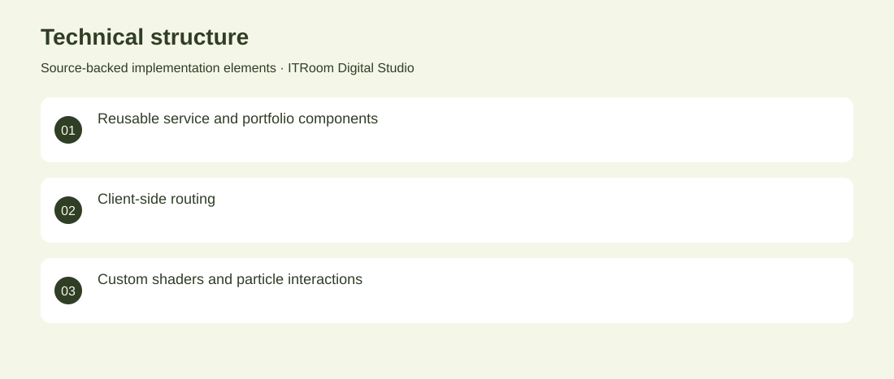

The project
A series of digital-studio websites spanning a React service portfolio, a richer WebGL edition and a custom visual identity. The work presents services, selected projects and contact journeys. Built component-based marketing pages and evolved the presentation into animation, particles and interactive 3D scenes. Archived website iterations. No adoption, revenue or deployment claims are inferred from the repository.
The problem
A digital studio needs its website to demonstrate the quality of its own engineering and design.
The solution
Built component-based marketing pages and evolved the presentation into animation, particles and interactive 3D scenes.
My contribution
Frontend development, responsive composition, interaction design and studio branding across successive versions.
Technical structure

The portfolio cover is an editorial illustration. No live product screenshot is presented for this project.
Showcase assets
{kind=link}
{kind=link}
{kind=link}
Existing product identity. Newly designed marks are portfolio treatments, not claims of official client branding.